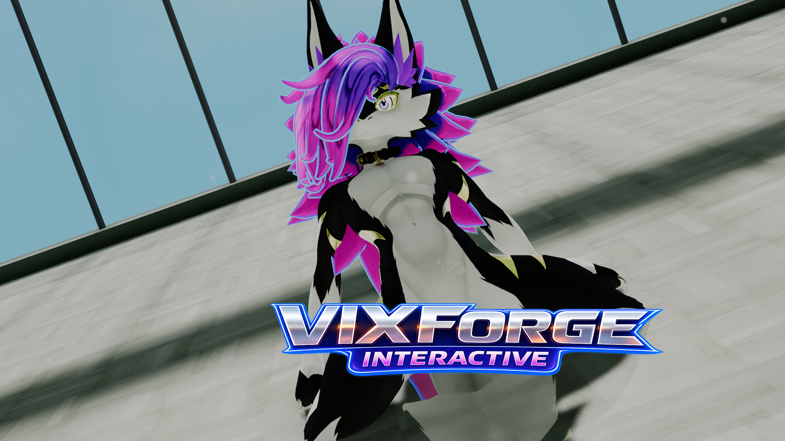

Built from what you turn on
Built From What You Turn On - Latex Ultra 5.0 & Friends
Every one of our shaders used to carry every feature we have ever written, whether you switched it on or not. All of it compiled into your material, all of it loaded, all of it sitting right against the limit your graphics card allows. We had genuinely run out of room to add anything else. So this release takes the whole thing apart and puts it back together: your material is now built from the features you actually turned on, and nothing else. A default material went from sixty five textures down to five.
Genuinely Modular Now
Sixty five was not a comfortable number. It was one over the point where Unity refuses to load a shader at all, which is a wall we had already hit. Features are now compiled in only when their toggle is on, so what you build is what you asked for.
- Faster to work with: Imports and locks are quicker, because a material with a handful of features on is no longer compiling all of them.
- Room to grow: We can keep adding without every new map pushing the whole thing over the edge for everyone.
- Nothing changes in how you work: Tick a feature on and it appears, tick it off and it goes. One thing to know: if an animation switches a feature on, right-click that toggle and tick Animated (when locked), so the feature is there for the clip to switch on.
- Locked materials tell the truth: Once locked, a feature you left off is not in there and cannot be switched back on without unlocking. Those sections now step aside instead of offering a control that cannot work.
World Lights That Were Going Missing
This one had been quietly wrong for a long time. Lights a world marks Not Important were being dropped completely, and most worlds only run four pixel lights. Anywhere busy, that was the majority of the lighting never reaching you at all. Your material will look brighter in those worlds now, and that is the result it should always have given.
- Lighting Check: A new view under RENDERING that paints your material with the light actually reaching it, so you can see which system a world is lighting you with instead of guessing. All Sources tints them all at once, or pick one to see it on its own.
- Light Volumes: Up to date with 3.0.0-dev.17.
- AudioLink everywhere: Chromatic Bloom, Note Swarm, Spectrum Ribbon and the separate goo, HUD and trail passes were each deciding for themselves whether AudioLink was live, and some ignored the media switch entirely. They all ask the same question now.
Glitter, Hyperspace And The Rest
- Flake sprites have their own slot: Shape set to Texture now reads a Shape Sprite slot of its own instead of borrowing a channel of the glitter Mask. If you already used Texture, drop your sprite in the new slot.
- Hyperspace: The surface stops behaving like a surface. A ray carries on past it into a space that is not there, so what you see has real depth and swings as you walk around it. Tunnel flies you down a twisting glowing pipe, Weave winds a vortex of fine threads away from you, and both move to the music.
- Three glitter layers: Each with its own shape, depth, swirl and twinkle, so fine dust can settle over big flakes.
- Micro Detail: Now its own section under Bent Normals, with its map and settings inside it instead of loose among the normal map rows.
This lands as Latex Ultra 5.0.0, VixForge Toon 2.0.0, Clothing Pro 2.0.0, Fur Pro 2.0.0 and the editor at 2.0.0. Major version numbers across the board, because the way your material is built has genuinely changed underneath. Everything you had set stays set.